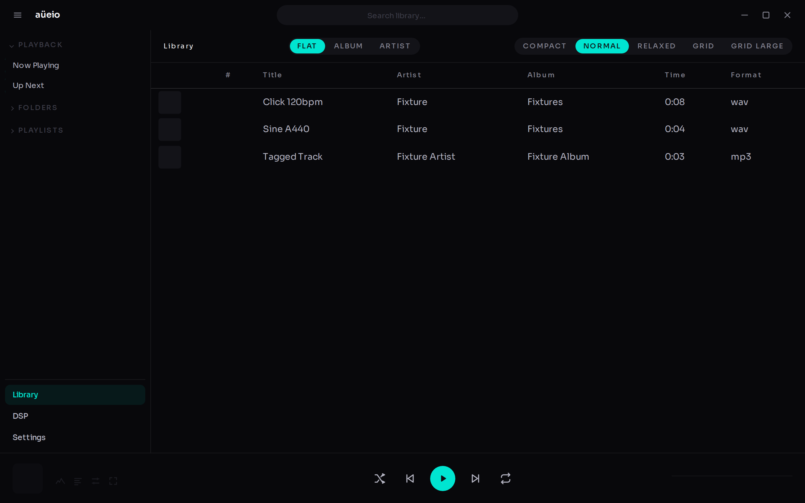
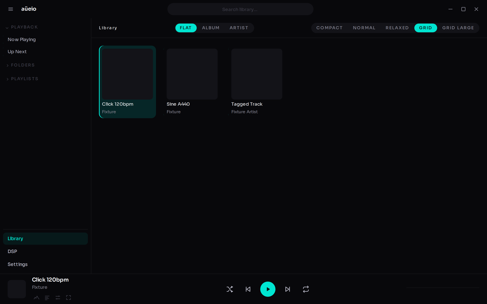
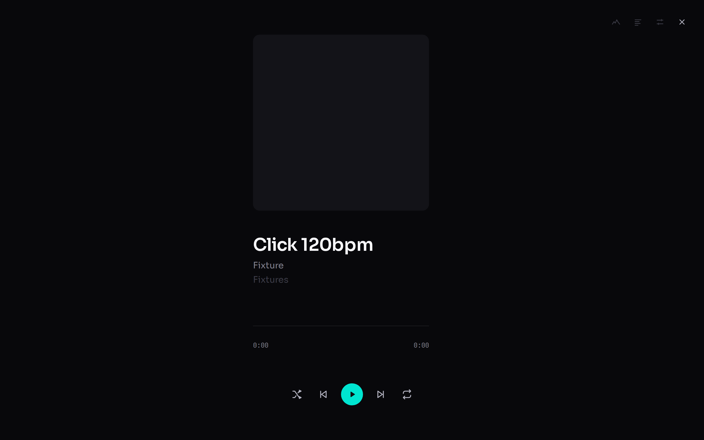
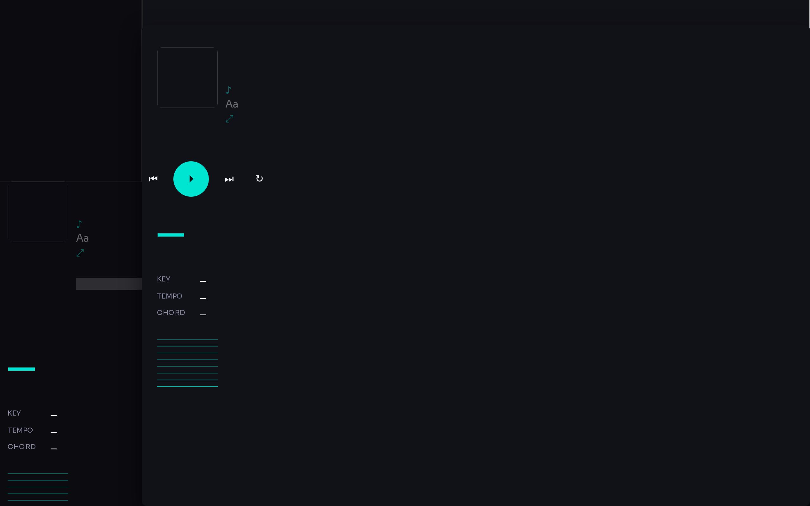
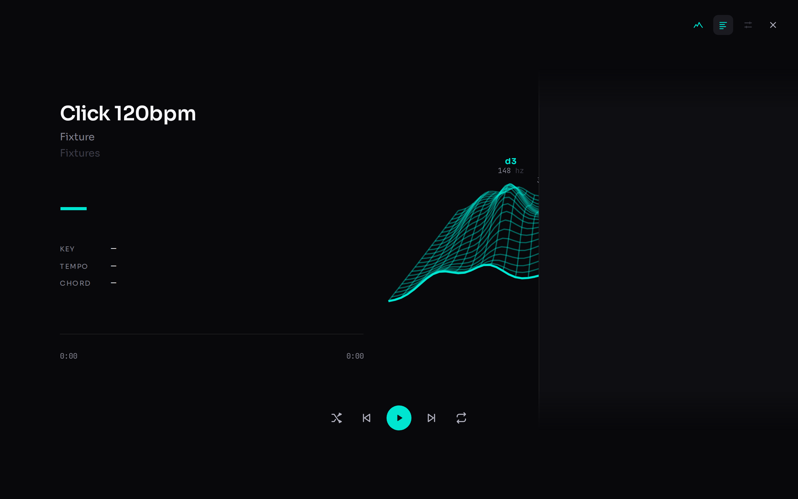
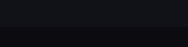
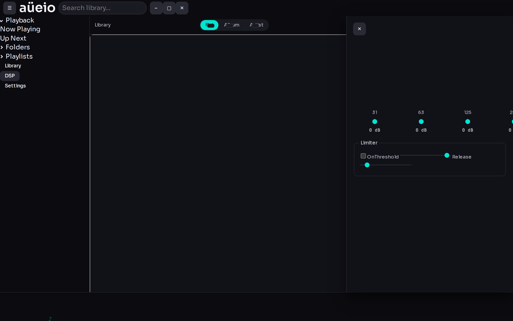
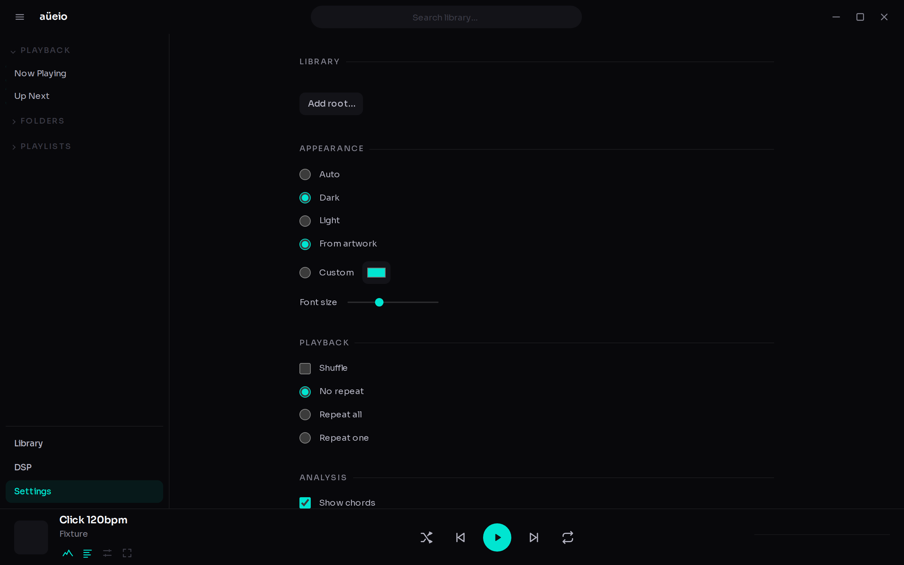
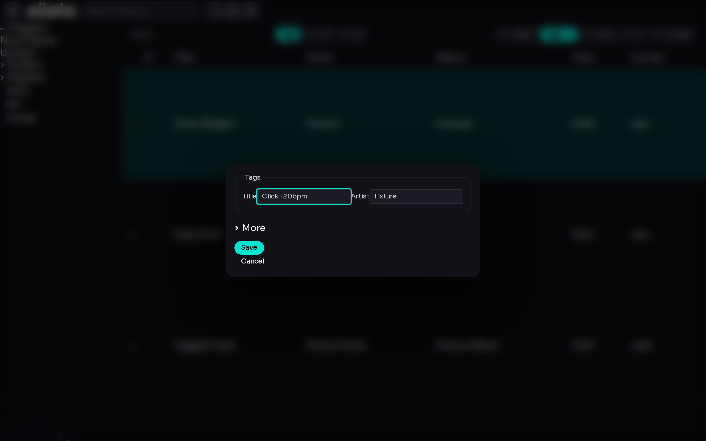

What it does
-
Library
Scans your folders, reads real tags and durations, and stays out of the way while it streams results in.
-
Now playing, two views
Album art or a live chord/key/tempo analysis view, both under one lyrics layer that slides in from the edge.
-
Artwork-derived accent
The whole interface's accent colour is lifted from the playing track's artwork, contrast-checked against the surface.
-
Slim DSP
A ten-band ISO octave equaliser with a live response curve and a limiter, no plugin marketplace required.
-
Full keyboard control
Twelve default bindings covering playback, navigation and views, all rebindable in Settings.
-
Tag editing
Edits are stored in the app's own database, never written back into your audio files.
Screenshots








